Editing Bone Properties¶
Tip
In this page, you will learn how to edit and control most of the properties for Blender bones - For editing bones in an armature, you should read the previous page first. We will see how to manage the bones’ relationships (Chain Editing), rename them (Naming Bones), etc.
变换ing Bones¶
We won’t detail here the various transformations of bones, nor things like axis locking, 轴心点s, and so on, as they are common to most object editing, and already described here (note however, that some options, like snapping, do not seem to work, even though they are available...). The same goes for mirroring, as it’s nearly the same as with mesh editing. Just keep in mind that bones’ roots and tips behave more or less like meshes’ vertices, and bones themselves act like edges in a mesh.
As you know, bones can have two types of relationships: They can be parented, and in addition connected. Parented bones behave in 编辑模式 exactly as if they had no relations - you can grab, rotate, scale, etc. a parent bone without affecting its descendants. However, connected bones must always have parent’s tips connected to child’s roots, so by transforming a bone, you will affect all its connected parent/children/siblings.
{kind=link}
The 变换 Properties panel for armatures in 编辑模式.
Finally, you can edit in the 变换 Properties panel N
the positions and radius of both ends of the active selected bone,
as well as its roll rotation.
Radius and Scaling in Envelope Visualization¶
参考
SWhen bones are displayed using Octahedron, Stick or B-Bone visualizations, scaling will behave as expected, similar to scaling mesh objects. When bones are displayed using Envelope visualization, scaling will have a different effect: it will scale the radius of the selected bones’s ends. (see: skinning part). As you control only one value (the radius), there is no axis locking here. And as usual, with connected bones, you scale at the same time the radius of the parent’s tip and of the children’s roots.
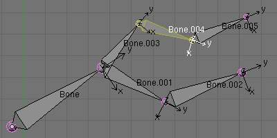
A single selected bone... |
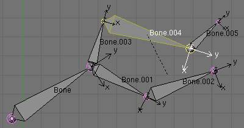
...Scaled in Octahedron visualization. |
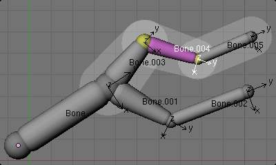
A single selected bone... |
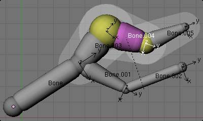
...Scaled in Envelope visualization - its length remains the same, but its ends’ radius are bigger. |
{kind=link}
{kind=link}
{kind=link}
{kind=link}
Note that when you resize a bone (either by directly scaling it, or by moving one of its ends), Blender automatically adjusts the end-radii of its envelope proportionally to the size of the modification. Therefore, it is advisable to place all the bones first, and only then edit these properties.
ScaleB and Envelope¶
参考
Ctrl-Alt-SCtrl-Alt-S activates a transform tool that is specific to armatures.
It has different behavior depending on the active visualization, as explained below:
In Envelope visualization, it allows you to edit the influence of the selected bones (their Dist property, see the skinning part) - as with the “standard” scaling with this visualization (see the previous section), this is a one-value property, so there is no axis locking and such.
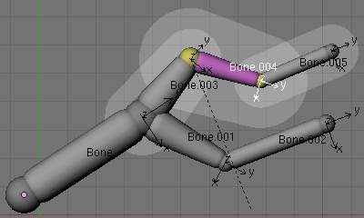
Its envelope scaled with |
{kind=link}
In the other visualizations, it allows you to edit the “bone size”. This seems to only have a visible effect in B-Bone visualization, but is available also with Octahedron and Stick ... This tool in this situation has another specific behavior: While with other transform tools, the “local axes” means the object’s axes, here they are the bone’s own axes (when you lock to a local axis, by pressing the relevant key twice, the constraint is applied along the selected bone’s local axis, not the armature object’s axis).
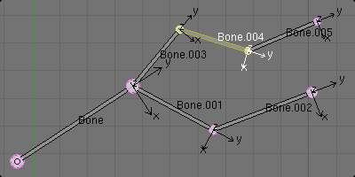
A single “default size” bone selected in B-Bone visualization. |
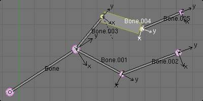
Its size scaled with |
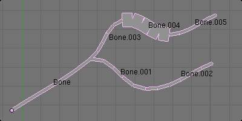
The same armature in 物体模式 and B-Bone visualization, with Bone.004’s size scaled up. |
{kind=link}
{kind=link}
{kind=link}
Bone Direction¶
参考
W-3This tool is not available from the Armature menu,
but only from the Specials pop-up menu W.
It allows you to switch the direction of the selected bones (i.e.
their root will become their tip, and vice versa).
Switching the direction of a bone will generally break the chain(s) it belongs to. However, if you switch a whole (part of a) chain, the switched bones will still be parented/connected, but in “reversed order”. See the Fig. Switching example..
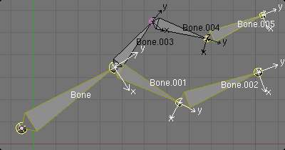
An armature with one selected bone, and one selected chain of three bones, just before switching. |
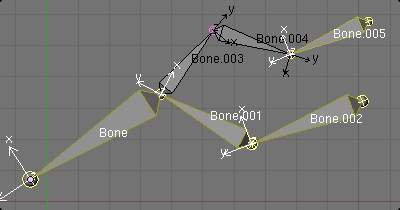
The selected bones have been switched. Bone.005 is no more connected nor parented to anything. The chain of switched bones still exists, but reversed (Now Bone.002 is its root, and Bone is its tip). Bone.003 is now a free bone. |
{kind=link}
{kind=link}
Bone Roll¶
In 编辑模式, you can control of the bones roll (i.e. the rotation around the Y axis of the bone).
However, after editing the armature, or when using euler rotation, you may want to set the bone roll.
Set Bone Roll¶
参考
Ctrl-RThis is a transform mode where you can edit the roll of all selected bones.
Recalculate Bone Roll¶
参考
Ctrl-N- Axis Orientation
- Local (X,Z) Tangent
- Align roll relative to the axis defined by the bone and it’s parent.
- Global (X,Y,Z) Axis
- Align roll to global X,Y,Z axis.
- Active Bone
- Follow the rotation of the active bone.
- View Axis
- Set the roll to align with the view-port.
- Cursor
- Set the roll towards the 3D游标.
- Flip Axis
- Reverse the axis direction.
- Shortest Rotation
- Avoids rolling the bone over 90 degrees from its current value.
Properties¶
参考
Shift-W, Ctrl-Shift-W, Alt-W{kind=link}
The Armature Bones panel in 编辑模式.
Most bones’ properties (excepted the transform ones) are regrouped in each bone’s sub-panel, in the Armature Bones panel in 编辑模式. Let us detail them.
Note that some of them are also available in the 3D视图s, through the three pop-up menus within the same entry:
- Toggle Setting:
Shift-Wor - Enable Setting:
Ctrl-Shift-Wor - Disable Setting:
Alt-Wor
- BO
- The bone name field, see Naming Bones.
- child of
- These two settings control the bone relationship, as detailed in Chain Editing.
- Segm
- This setting controls the number of segments that a bone has; see Bone Rigidity.
- Dist, Weight, Deform
(also
Shift-W), Mult (alsoShift-W)These settings control how the bone influences its geometry - along with the bones’ ends radius. This will be detailed in the skinning part.
- Hinge
(also
Shift-W), S (alsoShift-W)These settings affect the behavior of children bones while transforming their parent in 姿态模式, so this will be detailed in the posing part !
- Hide
- This will hide the bone (same as pressing
Hin the 3D视图s; see this page). - Lock
- (also
Shift-W) This will prevent all editing of the bone in 编辑模式; see previous page. - Layers button
- These small buttons allow you to control to which bone layer this bone belongs; see this page.
Bone Rigidity¶
参考
{kind=link}
The Armature Bones panel in 姿态模式.
Even though you have the Segm setting available in 编辑模式
(bones sub-panel, in the Armature Bones panel),
you should switch to the 姿态模式 Ctrl-Tab to edit these “smooth”
bones’ properties - one explanation to this strange need is that in 编辑模式,
even in B-Bone visualization, bones are drawn as sticks,
so you cannot visualize the effects of these settings.
{kind=link}
An armature in 姿态模式, B-Bone visualization: Bone.003 has one segment, Bone.004 has four, and Bone.005 has sixteen.
We saw in this page that bones are made of small rigid segments mapped to a “virtual” 贝塞尔曲线. The Segm numeric field allows you to set the number of segments inside a given bone - by default, it is set to 1, which gives a standard rigid bone. The higher this setting (max is 32), the smoother the bone, but the heavier the pose calculations...
Each bone’s ends are mapped to its “virtual” 贝塞尔曲线’s “auto” handle. Therefore, you cannot control their direction, but you can change their “length” using the In and Out numeric fields, to control the “root handle” and “tip handle” of the bone, respectively. These values are proportional to the default length, which of course automatically varies depending on bone length, angle with previous/next bones in the chain, and so on.
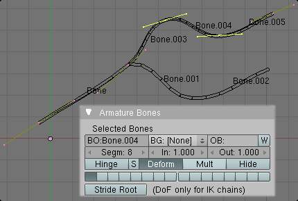
Look at Bone.004: it has the default In and Out values (1.0). |
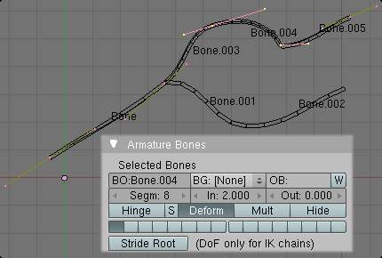
Bone.004 with In at 2.0, and Out at 0.0. |
{kind=link}
{kind=link}
Chain Editing¶
参考
Ctrl-P, Alt-PYou can edit the relationships between bones (and hence create/modify the chains of bones) both from the 3D视图s and the Properties editor. Whatever method you prefer, it’s always a matter of deciding, for each bone, if it has to be parented to another one, and if so, if it should be connected to it.
To parent and/or connect bones, you can:
In a 3D视图, select the bone and then its future parent, and press
Ctrl-P(or ). In the small Make Parent menu that pops up, choose Connected if you want the child to be connected to its parent, else click on Keep Offset. If you have selected more than two bones, they will all be parented to the last selected one. If you only select one already-parented bone, or all selected bones are already parented to the last selected one, your only choice is to connect them, if not already done. If you select only one non-parented bone, you will get the Need selected bone(s) error message...Note
With this method, the newly-children bones won’t be scaled nor rotated - they will just be translated if you chose to connect them to their parent’s tip.
In the Properties editor, Armature Bones panel, for each selected bone, you can select its parent in the Parent drop-down list to the upper right corner of its sub-panel. If you want them to be connected, just enable the little Con button to the right of the list.
Note
With this method, the tip of the child bone will never be translated - so if Con is enabled, the child bone will be completely transformed by the operation.
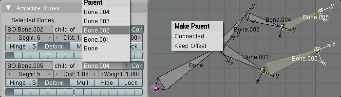
The starting armature, with Bone.005 parented and connected to Bone.004. |
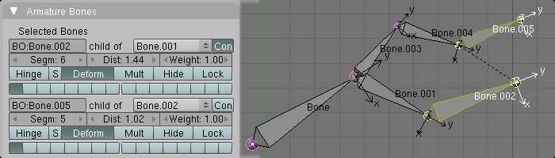
Bone.005 re-parented to Bone.002, but not connected to it
(same result, using either |
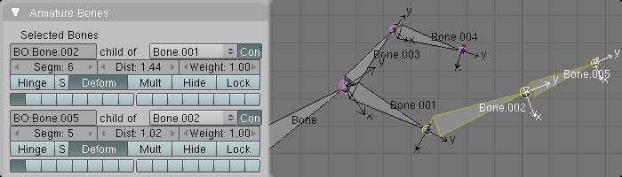
Bone.005 parented and connected to Bone.002, using |
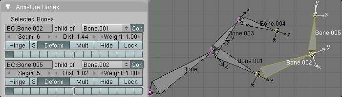
Bone.005 parented and connected to Bone.002, using the Parent drop-down list of Bone.005 sub-panel. |
{kind=link}
{kind=link}
{kind=link}
{kind=link}
To disconnect and/or free bones, you can:
- In a 3D视图, select the desired bones, and press
Alt-P(or ). In the small Clear Parent menu that pops up, choose Clear Parent to completely free all selected bones, or Disconnect Bone if you just want to break their connections. - In the Properties editor, Armature Bones panel, for each selected bone, you can select no parent in the Parent drop-down list of its sub-panel, to free it completely. If you just want to disconnect it from its parent, disable the Con button.
Note that relationships with non-selected children are never modified.
Naming Bones¶
参考
N)You can rename your bones, either using the Bone field of the 变换 Properties
panel in the 3D视图s, for the active bone N,
or using the BO field in each bone sub-panel of the Armature Bones panel
in 编辑模式.
Blender also provides you some tools that take advantage of bones named in a left/right symmetry fashion, and others that automatically name the bones of an armature. Let us look at this in detail.
Naming Conventions¶
{kind=link}
An example of left/right bone naming in a simple rig.
Naming conventions in Blender are not only useful for you in finding the right bone, but also to tell Blender when any two of them are counterparts.
In case your armature can be mirrored in half (i.e. it’s bilaterally symmetrical), it’s worthwhile to stick to a left/right naming convention. This will enable you to use some tools that will probably save you time and effort (like the X-Axis Mirror editing tool we saw above...).
First you should give your bones meaningful base-names, like “leg”, “arm”, “finger”, “back”, “foot”, etc.
If you have a bone that has a copy on the other side (a pair), like an arm, give it one of the following separators:
- Left/right separators can be either the second position “L_calfbone” or last-but-one “calfbone.R”
- If there is a lower or upper case “L”, “R”, “left” or “right”, Blender handles the counterpart correctly. See below for a list of valid separators. Pick one and stick to it as close as possible when rigging; it will pay off.
例子s of valid saparators:
- (nothing): handLeft –> handRight
_(underscore): hand_L –> hand_R.(dot): hand.l –> hand.r-(dash): hand-l –> hand-r- `` `` (space): hand LEFT –> hand RIGHT
Note that all examples above are also valid with the left/right part placed before the name. You can only use the short “L”/ “R” code if you use a separator (i.e. “handL”/ “handR” won’t work!).
Before Blender handles an armature for mirroring or flipping, it first removes the number extension, e.g. ”.001”.
You can copy a bone named “bla.L” and flip it over using
W. Blender will name the copy “bla.L.001” and flipping the name will give you “bla.R”.
Bone name flipping¶
参考
W-4You can flip left/right markers (see above) in selected bone names,
using either ,
or , W-4.
This can be useful if you have constructed half of a symmetrical rig
(marked for a left or right side) and duplicated and mirrored it,
and want to update the names for the new side.
Blender will swap text in bone names according to the above naming conventions,
and remove number extensions if possible.
Auto bone naming¶
参考
W-5, W-6, W-7The three AutoName entries of the Armature and Specials
W menus allows you to automatically add a suffix to all selected bones, based
on the position of their root relative to the armature center and its local coordinates :
- AutoName Left-Right
- will add the ”.L” suffix to all bones with a positive X-coordinate root, and the ”.R” suffix to all bones with a negative X-coordinate root. If the root is exactly at 0.0 on the X-axis, the X-coordinate of the tip is used. If both ends are at 0.0 on the X-axis, the bone will just get a period suffix, with no “L”/ “R” (as Blender cannot decide whether it is a left or right bone...).
- AutoName Front-Back
- will add the ”.Bk” suffix to all bones with a positive Y-coordinate root, and the ”.Fr” suffix to all bones with a negative Y-coordinate root. The same as with AutoName Left-Right goes for 0.0 Y-coordinate bones...
- AutoName Top-Bottom
- will add the ”.Top” suffix to all bones with a positive Z-coordinate root, and the ”.Bot” suffix to all bones with a negative Z-coordinate root. The same as with AutoName Left-Right goes for 0.0 Z-coordinate bones...